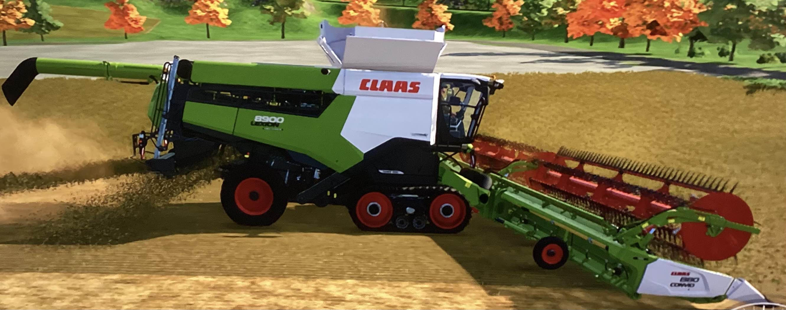
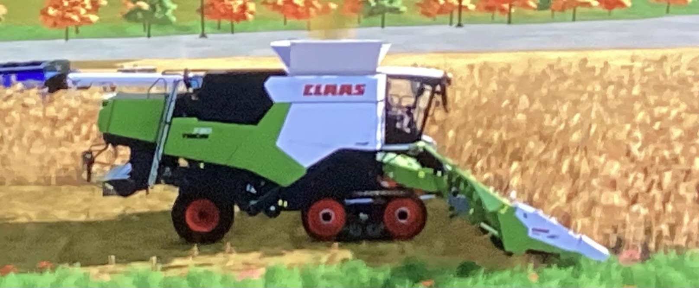
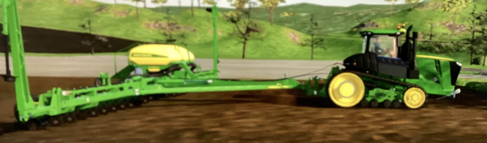
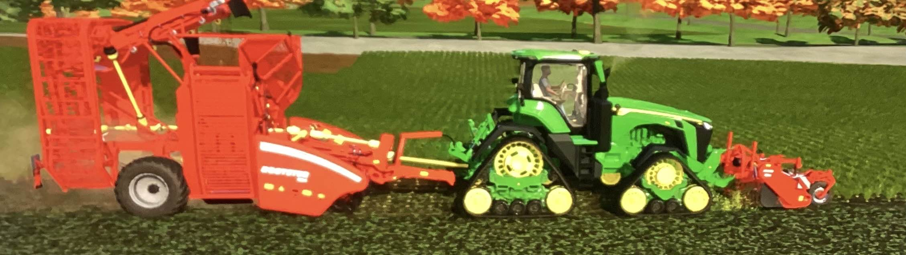
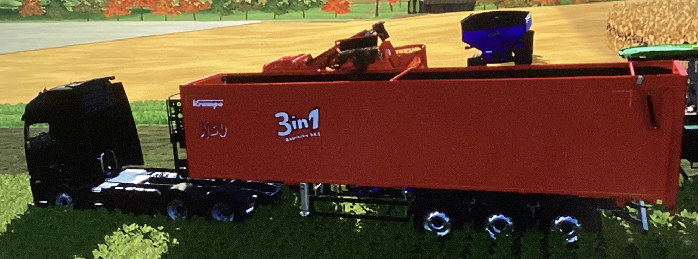
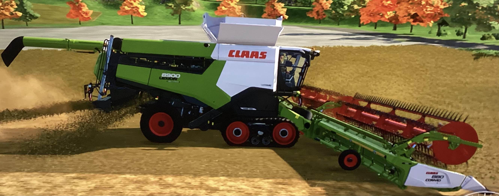
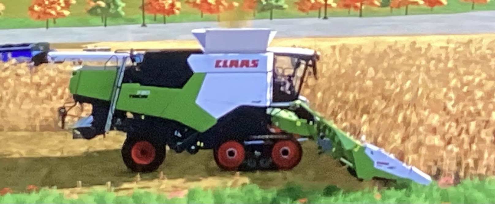
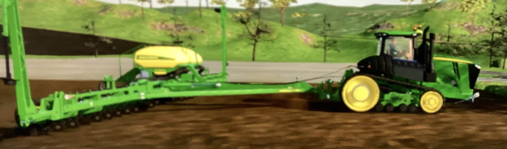

Also in this farm I have corn and soybeans to harvest.
 To harvest corn or soybeans you need a planter
Then when your done harvesting you have to cultivate

In this farm it is a combined mix of normal farm and a sugar beet farm.
In this farm I have a sugar beet part of it and when I have that I need a sgar beet combine, I will also need a foilage remover so I can get rid of the foilage on top.
After that I have two trucks to haul sugar beets to the sugar beet plant so the harvest can go fluently.
two of the same type
Also in this farm I have corn and soybeans to harvest.
 To harvest corn or soybeans you need a planter
Then when your done harvesting you have to cultivate